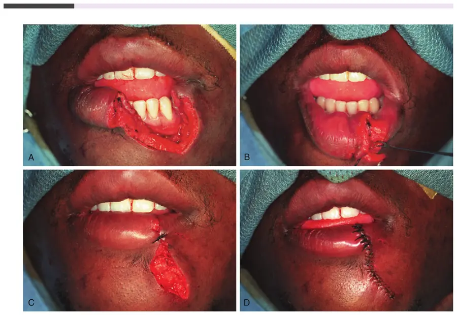

نسخه استخراجشده؛ ترجمه یا تأیید علمی انجام نشده است. وضعیت: captured
یک قاعدهی ترتیبی که وقت و بافت را نجات میدهد: زخمهای بافت نرم همراه ترومای دنتوآلوئولار همیشه پس از مدیریت آسیب بافت سخت درمان میشوند.

و دو دلیلش:
و چهار گام مدیریت جراحی پارگی — پس از بیحسی کافی: (۱) تمیز کردن، (۲) دبریدمان، (۳) هموستاز، و (۴) بستن. این گامها برای پارگی در هر جای بدن، از جمله حفرهی دهان و نواحی پیرادهانی، برقرارند.
گام ۱ — تمیز کردن زخم:
گام ۲ — دبریدمان، و یک قاعدهی محافظهکارانه: دبریدمان به برداشتن بافت کوفته و دویتالیزه از زخم و برداشتن تکههای دندانهدار بافت سطحی برای امکان بستن خطی اشاره دارد.
گام ۳ — هموستاز، و رگی که باید بشناسی:
نخست یک نکته که شاید انتظارش را نداشته باشی: هر پارگی در حفرهی دهان لازم نیست با بخیه بسته شود.
دو مثال کلاسیک:
چون این زخمهای کوچک بهخوبی با ترمیم ثانویه بهبود مییابند و بهتر است به حال خود گذاشته شوند.
و اگر بستن مناسب تشخیص داده شد، هدف چیست؟ هدف حین بستن، قرارگیری درست تمام لایههای بافتی است — و شیوهی پیشرفت بستن کاملاً به محل و عمق پارگی بستگی دارد.
و سه سناریوی بستن:
و حالا مهمترین بخش این درس — پارگی تمامضخامت لب و آن یک بخیه:
اگر پارگی مرز ورمیلیون را درگیر کند، نخستین بخیهی گذاشتهشده باید در محل اتصال موکوکوتانئوس باشد. و دلیلش را بیپرده بدان: همترازی کامل این محل اتصال پوست و مخاط الزامی است، وگرنه میتواند به تغییرشکلی بینجامد که از فاصله دیده میشود.
و پس از آن، بستن سهلایه از داخل به بیرون:
و یک جملهی بیرحمانه ولی درست: زخم در پایان بخیه زدن، به همان خوبیای خواهد بود که هرگز خواهد شد. پس اگر همترازی بافتها ضعیف به نظر میرسد، باید برداشتن بخیهها و گذاشتن دوبارهشان به شیوهی مطلوبتر در نظر گرفته شود. سپس سطح درمال باید با پماد آنتیبیوتیک پوشانده شود.
و درمان حمایتی — سه تصمیم:
و برداشتن بخیه: بهطور کلی بخیههای پوست صورت باید ۴ تا ۶ روز پس از عمل برداشته شوند. هنگام برداشتن، بخیه باید بریده و سپس در جهتی کشیده شود که زخم را باز نکند. نوارهای چسبی میتوانند در زمان برداشتن بخیه گذاشته شوند تا حمایت خارجی از زخم در حال ترمیم فراهم کنند.